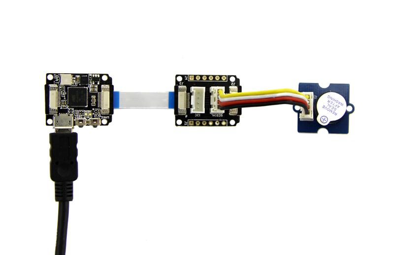

Perhaps you want to connect various modules to Xadow. For example, an IR sensor which can detect whether someone is near by. You can connect the sensor to this Breakout Module.
Below is the Demo to control a buzzer. You need to connect Grove - Buzzer to Xadow Breakout with a Grove cable and connect Xadow Breakout to Xadow Main Board with a FFC cable.

Xadow breakout not only can control some modules which are IIC communication or Serial communication, but also can control other modules because the two Grove connectors can be used as Digital port or Analog port. In other words, it can control all Grove modules.
The demo code like this:
Void setup() { DDRD |=0x04; } void loop() { PORTD |=0x04; delay(500); PORTD &=~(0x04); delay(500); }
Now you can hear the buzzer "Bi Bi Bi". You can replace it with Grove - LED and see the LED on/off.